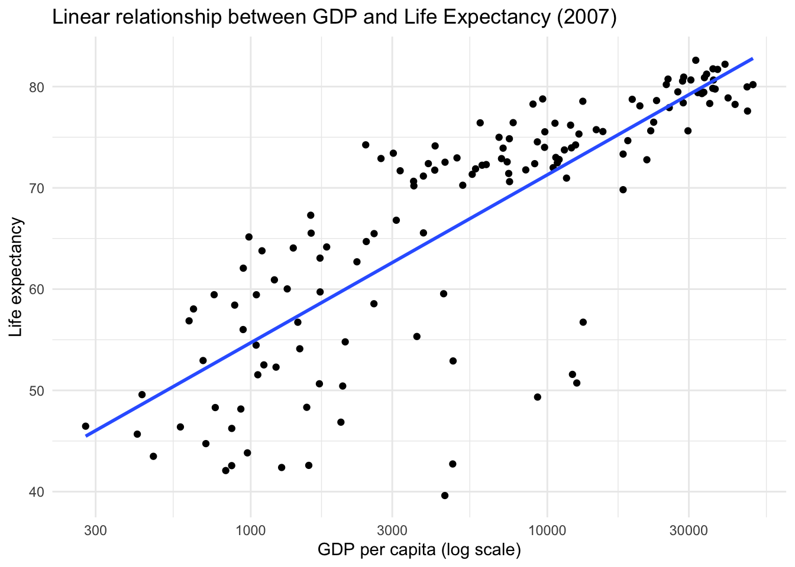

The goal of this portfolio piece is to expand my personal R and Git/GitHub quick-reference guide to focus on more advanced stages of the research workflow, including statistical modeling, refined data visualization, reproducible reporting, and collaborative project management. While the first section emphasizes foundational skills, this portion documents how I move from cleaned data to meaningful analysis and professional communication.
Real research rarely uses one dataset.
Use left_join(), inner_join(), etc. to combine datasets.
Clean categorical variables early (factor levels, spelling, case).
Text variables often need string cleaning (stringr).
# Create two small datasets
df1 <- tibble(
id = c(1, 2, 3),
score = c(85, 90, 78)
)
df2 <- tibble(
id = c(1, 2, 3),
condition = c("control", "treatment", "control")
)
# Join
df_joined <- df1 %>%
left_join(df2, by = "id")
df_joined## # A tibble: 3 × 3
## id score condition
## <dbl> <dbl> <chr>
## 1 1 85 control
## 2 2 90 treatment
## 3 3 78 controldf_joined %>%
mutate(
condition = stringr::str_to_title(condition)
)## # A tibble: 3 × 3
## id score condition
## <dbl> <dbl> <chr>
## 1 1 85 Control
## 2 2 90 Treatment
## 3 3 78 ControlModeling should integrate cleanly into tidy workflows.
Fit model → tidy output → visualize predictions.
Use broom to turn model results into tidy tibbles.
model <- gapminder::gapminder %>%
filter(year == 2007) %>%
lm(lifeExp ~ gdpPercap, data = .)
summary(model)##
## Call:
## lm(formula = lifeExp ~ gdpPercap, data = .)
##
## Residuals:
## Min 1Q Median 3Q Max
## -22.828 -6.316 1.922 6.898 13.128
##
## Coefficients:
## Estimate Std. Error t value Pr(>|t|)
## (Intercept) 5.957e+01 1.010e+00 58.95 <2e-16 ***
## gdpPercap 6.371e-04 5.827e-05 10.93 <2e-16 ***
## ---
## Signif. codes: 0 '***' 0.001 '**' 0.01 '*' 0.05 '.' 0.1 ' ' 1
##
## Residual standard error: 8.899 on 140 degrees of freedom
## Multiple R-squared: 0.4606, Adjusted R-squared: 0.4567
## F-statistic: 119.5 on 1 and 140 DF, p-value: < 2.2e-16tidy(model)## # A tibble: 2 × 5
## term estimate std.error statistic p.value
## <chr> <dbl> <dbl> <dbl> <dbl>
## 1 (Intercept) 59.6 1.01 59.0 9.89e-101
## 2 gdpPercap 0.000637 0.0000583 10.9 1.69e- 20glance(model)## # A tibble: 1 × 12
## r.squared adj.r.squared sigma statistic p.value df logLik AIC BIC
## <dbl> <dbl> <dbl> <dbl> <dbl> <dbl> <dbl> <dbl> <dbl>
## 1 0.461 0.457 8.90 120. 1.69e-20 1 -511. 1028. 1037.
## # ℹ 3 more variables: deviance <dbl>, df.residual <int>, nobs <int>gapminder::gapminder %>%
filter(year == 2007) %>%
ggplot(aes(x = gdpPercap, y = lifeExp)) +
geom_point() +
geom_smooth(method = "lm", se = FALSE) +
scale_x_log10() +
labs(
title = "Linear relationship between GDP and Life Expectancy (2007)",
x = "GDP per capita (log scale)",
y = "Life expectancy"
) +
theme_minimal()## `geom_smooth()` using formula = 'y ~ x'
Avoid repetition.
Write functions for repeated workflows.
Keep scripts modular.
Name functions clearly and document inputs.
mean_by_group <- function(data, group_var, outcome_var) {
data %>%
group_by({{ group_var }}) %>%
summarise(
mean_value = mean({{ outcome_var }}, na.rm = TRUE),
n = n(),
.groups = "drop"
)
}
mean_by_group(gapminder::gapminder, continent, lifeExp)## # A tibble: 5 × 3
## continent mean_value n
## <fct> <dbl> <int>
## 1 Africa 48.9 624
## 2 Americas 64.7 300
## 3 Asia 60.1 396
## 4 Europe 71.9 360
## 5 Oceania 74.3 24This uses tidy evaluation ({{ }}) so the function works flexibly.
Common Errors:
Object not found → object never created in knit session.
No applicable method → wrong object type (check class()).
File does not exist → incorrect working directory.
Unexpected symbol → missing comma or parenthesis.
My Debugging Checklist:
Run code line-by-line.
Check class(object).
Print intermediate objects.
Restart R session and re-run.
Google the exact error message.
Asking Good Technical Questions:
What I’m trying to do
Minimal reproducible example
Exact error message
What I’ve already tried
Example:
Version control tracks changes over time.
Commit early, commit often.
Use clear commit messages.
Separate raw data, scripts, and outputs.
Basic Git Flow:
git add .
git commit -m “Add modeling section to Portfolio 2”
git push
Good Project Structure:
portfolio/
├── p01.Rmd
├── p02.Rmd
├── data/
├── figs/
├── README.md